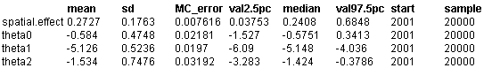

![[forest0]](forest0.bmp) Poisson-gamma spatial moving
Poisson-gamma spatial movingaverage (convolution)model:
Distribution of hickory trees
in Duke forest
Ickstadt and Wolpert (1998) and Wolpert and Ickstadt (1998) analyse the spatial distribution of hickory trees (a subdominant species) in a 140 metre x 140 metre research plot in Duke Forest, North Carolina, USA, with the aim of investigating the regularity of the distribution of trees: spatial clustering would reveal that the subdominant species is receding from, or encroaching into, a stand recovering from a disturbance, while regularity would suggest a more stable and undisturbed recent history.
The data comprise counts of trees, Y i , in each of i=1,...,16 30m x 30m quadrats (each having area A i = 900 m 2 ) on a 4x4 grid covering the research plot (excluding a 10m boundary region to minimise edge effects), together with the x and y co-ordinates of the centroid of each plot (relative to the south-west corner of the research plot). Ickstadt and Wolpert (1998) fit a Poisson-gamma spatial moving average model as follows:
Y i ~ Poisson( m i ) i = 1,...,16
m i = A i * l i
l i = S j k ij g j
where g j can be thought of as latent unobserved risk factors associated with locations or sub-regions of the study region indexed by j, and k ij is a kernel matrix of 'weights' which depend on the distance or proximity between latent location j and quadrat i of the study region (see Appendix 2 for further details of this convolution model). Ickstadt and Wolpert (1998) take the locations of the latent g j to be the same as the partition of the study region used for the observed data i.e. j = 1,....16 with latent sub-region j being the same as quadrat i of the study region. Note that it is not necessary for the latent partition to be the same as the observed partition - see Hudersfield . The g j are assigned independent gamma prior distributions
g j ~ Gamma( a , b ) j = 1,....,16.
Ickstadt and Wolpert (1998) consider two alternative kernel functions: an adjacency-based kernel and a distance-based kernel. The adjacency based kernel is defined as:
k ij = 1 if i = j
k ij = exp( q 2 )/n i if j is a nearest neighbour of i (only north-south and east-west
neighbours considered) and n i is the number of neighbours of area i
k ij = 0 otherwise
The distance based kernel is defined as:
k ij = exp( - [d ij / exp( q 2 )] 2 ) where d ij is the distance between the centroid of areas i and j
For both kernels, the parameter exp( q 2 ) reflects the degree of spatial dependence or clustering in the data, with large values of q 2 suggesting spatial correlation and irregular distribution of hickory trees.
Ickstadt and Wolpert (1998) elicit expert prior opinion concerning the unknown hyperparameters q 0 = log( a ), q 1 = - log( b ) and q 2 and translate this information into Normal prior distributions for q 0 , q 1 and q 2 .
This model may be implemented in WinBUGS 1.4 using the pois.conv distribution. The code is given below.
Model
model {
# likelihood
for (i in 1:N) {
Y[i] ~ dpois.conv(mu[i,])
for (j in 1:J) {
mu[i, j] <- A[i] * lambda[i, j]
lambda[i, j] <- k[i, j] * gamma[j]
}
}
# priors (see Ickstadt and Wolpert (1998) for details of prior elicitation)
for (j in 1:J) {
gamma[j] ~ dgamma(alpha, beta)
}
alpha <- exp(theta0)
beta <- exp(-theta1)
theta0 ~ dnorm(-0.383, 1)
theta1 ~ dnorm(-5.190, 1)
theta2 ~ dnorm(-1.775, 1) # prior on theta2 for adjacency-based kernel
# theta2 ~ dnorm(1.280, 1) # prior on theta2 for distance-based kernel
# compute adjacency-based kernel
# Note N = J in this example (necessary for adjacency-based kernel)
for (i in 1:N) {
k[i, i] <- 1
for (j in 1:J) {
# distance between areas i and j
d[i, j] <- sqrt((x[i] - x[j])*(x[i] - x[j]) + (y[i] - y[j])*(y[i] - y[j]))
# (only needed to help compute nearest neighbour weights;
# alternatively, read matrix w from file)
w[i, j] <- step(30.1 - d[i, j]) # nearest neighbour weights:
# areas are 30 sq m, so any pair of areas with centroids > 30m apart are not
# nearest neighbours (0.1 added to account for numeric imprecision in d)
}
for (j in (i+1):J) {
k[i, j] <- w[i, j] * exp(theta2) / (sum(w[i,]) - 1)
k[j, i] <- w[j, i] * exp(theta2) / (sum(w[j,]) - 1)
}
}
# alternatively, compute distance-based kernel
# for (i in 1:N) {
# k[i, i] <- 1
# for (j in 1:J) {
# distance between areas i and j
# d[i, j] <- sqrt((x[i] - x[j])*(x[i] - x[j]) + (y[i] - y[j])*(y[i] - y[j]))
# }
# for (j in (i+1):J) {
# k[i, j] <- exp(-pow(d[i, j]/exp(theta2), 2))
# k[j, i] <- exp(-pow(d[j, i]/exp(theta2), 2))
# }
# }
# summary quantities for posterior inference
for (i in 1:N) {
# smoothed density of hickory trees (per sq metre) in area i
density[i] <- sum(lambda[i, ])
# observed density of hickory trees (per sq metre) in area i
obs.density[i] <- Y[i]/A[i]
}
# large values indicate strong spatial dependence;
# spatial.effect -> 0 indicates spatial independence
spatial.effect <- exp(theta2)
}
Data (Click to open)
Inits for chain 1 Inits for chain 2 (Click to open)
Results
Assuming adjacency-based kernel (equivalent to Ickstadt and Wolpert's model M S ):

Ickstadt and Wolpert report a posterior mean (sd) of 0.281 (0.156) for the spatial effect, exp( q 2 ), from their analysis using a 4x4 partition of the study region (Table 1.3).
Assuming distance-based kernel (equivalent to Ickstadt and Wolpert's model M D ):